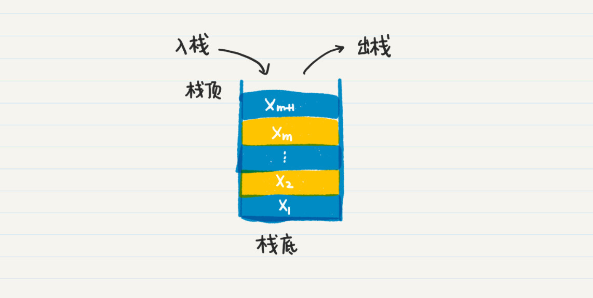
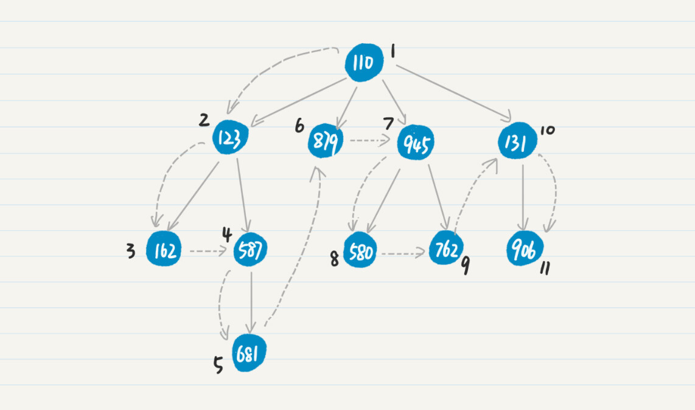
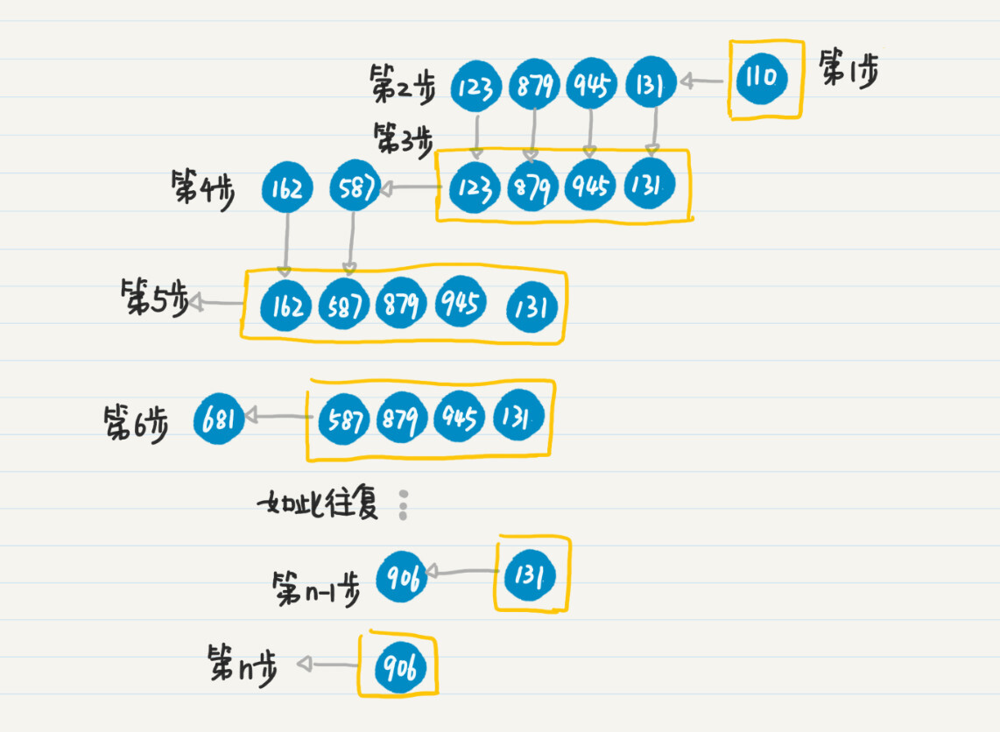
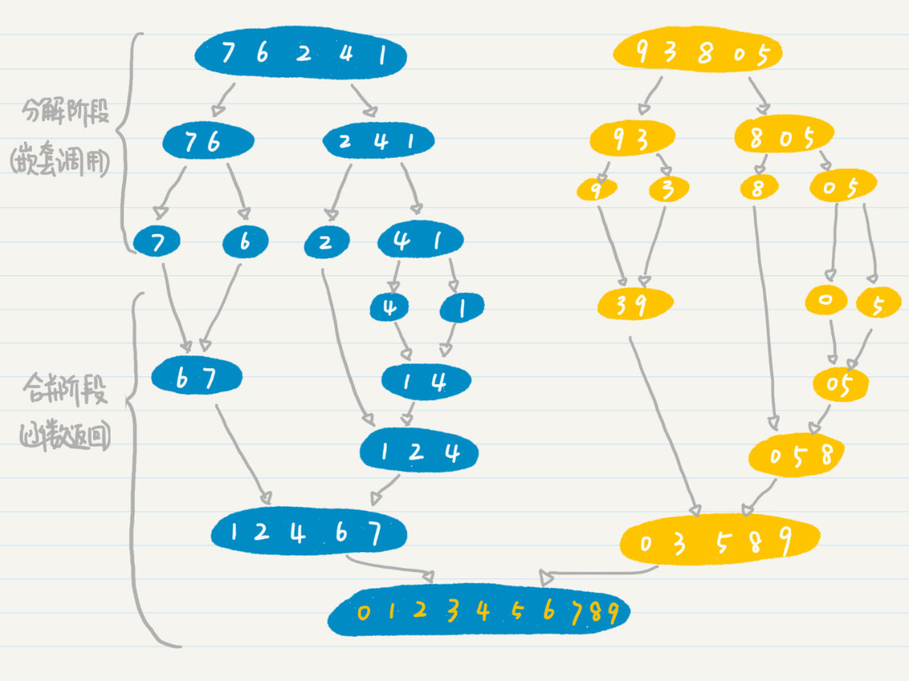

- 01 二进制：不了解计算机的源头，你学什么编程.md.html
- 02 余数：原来取余操作本身就是个哈希函数.md.html
- 03 迭代法：不用编程语言的自带函数，你会如何计算平方根？.md.html
- 04 数学归纳法：如何用数学归纳提升代码的运行效率？.md.html
- 05 递归（上）：泛化数学归纳，如何将复杂问题简单化？.md.html
- 06 递归（下）：分而治之，从归并排序到MapReduce.md.html
- 07 排列：如何让计算机学会“田忌赛马”？.md.html
- 08 组合：如何让计算机安排世界杯的赛程？.md.html
- 09 动态规划（上）：如何实现基于编辑距离的查询推荐？.md.html
- 10 动态规划（下）：如何求得状态转移方程并进行编程实现？.md.html
- 11 树的深度优先搜索（上）：如何才能高效率地查字典？.md.html
- 12 树的深度优先搜索（下）：如何才能高效率地查字典？.md.html
- 13 树的广度优先搜索（上）：人际关系的六度理论是真的吗？.md.html
- 14 树的广度优先搜索（下）：为什么双向广度优先搜索的效率更高？.md.html
- 15 从树到图：如何让计算机学会看地图？.md.html
- 16 时间和空间复杂度（上）：优化性能是否只是“纸上谈兵”？.md.html
- 17 时间和空间复杂度（下）：如何使用六个法则进行复杂度分析？.md.html
- 18 总结课：数据结构、编程语句和基础算法体现了哪些数学思想？.md.html
- 19 概率和统计：编程为什么需要概率和统计？.md.html
- 20 概率基础（上）：一篇文章帮你理解随机变量、概率分布和期望值.md.html
- 21 概率基础（下）：联合概率、条件概率和贝叶斯法则，这些概率公式究竟能做什么？.md.html
- 22 朴素贝叶斯：如何让计算机学会自动分类？.md.html
- 23 文本分类：如何区分特定类型的新闻？.md.html
- 24 语言模型：如何使用链式法则和马尔科夫假设简化概率模型？.md.html
- 25 马尔科夫模型：从PageRank到语音识别，背后是什么模型在支撑？.md.html
- 26 信息熵：如何通过几个问题，测出你对应的武侠人物？.md.html
- 27 决策树：信息增益、增益比率和基尼指数的运用.md.html
- 28 熵、信息增益和卡方：如何寻找关键特征？.md.html
- 29 归一化和标准化：各种特征如何综合才是最合理的？.md.html
- 30 统计意义（上）：如何通过显著性检验，判断你的A_B测试结果是不是巧合？.md.html
- 31 统计意义（下）：如何通过显著性检验，判断你的A_B测试结果是不是巧合？.md.html
- 32 概率统计篇答疑和总结：为什么会有欠拟合和过拟合？.md.html
- 33 线性代数：线性代数到底都讲了些什么？.md.html
- 34 向量空间模型：如何让计算机理解现实事物之间的关系？.md.html
- 35 文本检索：如何让计算机处理自然语言？.md.html
- 36 文本聚类：如何过滤冗余的新闻？.md.html
- 37 矩阵（上）：如何使用矩阵操作进行PageRank计算？.md.html
- 38 矩阵（下）：如何使用矩阵操作进行协同过滤推荐？.md.html
- 39 线性回归（上）：如何使用高斯消元求解线性方程组？.md.html
- 40 线性回归（中）：如何使用最小二乘法进行直线拟合？.md.html
- 41 线性回归（下）：如何使用最小二乘法进行效果验证？.md.html
- 42 PCA主成分分析（上）：如何利用协方差矩阵来降维？.md.html
- 43 PCA主成分分析（下）：为什么要计算协方差矩阵的特征值和特征向量？.md.html
- 44 奇异值分解：如何挖掘潜在的语义关系？.md.html
- 45 线性代数篇答疑和总结：矩阵乘法的几何意义是什么？.md.html
- 46 缓存系统：如何通过哈希表和队列实现高效访问？.md.html
- 47 搜索引擎（上）：如何通过倒排索引和向量空间模型，打造一个简单的搜索引擎？.md.html
- 48 搜索引擎（下）：如何通过查询的分类，让电商平台的搜索结果更相关？.md.html
- 49 推荐系统（上）：如何实现基于相似度的协同过滤？.md.html
- 50 推荐系统（下）：如何通过SVD分析用户和物品的矩阵？.md.html
- 51 综合应用篇答疑和总结：如何进行个性化用户画像的设计？.md.html
- 导读：程序员应该怎么学数学？.md.html
- 开篇词 作为程序员，为什么你应该学好数学？.md.html
- 数学专栏课外加餐（一） 我们为什么需要反码和补码？.md.html
- 数学专栏课外加餐（三）：程序员需要读哪些数学书？.md.html
- 数学专栏课外加餐（二） 位操作的三个应用实例.md.html
- 结束语 从数学到编程，本身就是一个很长的链条.md.html
- 捐赠
12 树的深度优先搜索（下）：如何才能高效率地查字典？
你好，我是黄申。今天咱们继续聊前缀树。
上节结尾我给你留了道思考题：如何实现前缀树的构建和查询？如果你动手尝试之后，你会发现，这个案例的实现没有我们前面讲的那些排列组合这么直观。
这是因为，从数学的思想，到最终的编程实现，其实需要一个比较长的过程。我们首先需要把问题转化成数学中的模型，然后使用数据结构和算法来刻画数学模型，最终才能落实到编码。
而在前缀树中，我们需要同时涉及树的结构、树的动态构建和深度优先搜索，这个实现过程相对比较复杂。所以，这节我就给你仔细讲解一下，这个实现过程中需要注意的点。只要掌握这些点，你就能轻而易举实现深度优先搜索。
如何使用数据结构表达树？
首先，我想问你一个问题，什么样的数据结构可以表示树？
我们知道，计算机中最基本的数据结构是数组和链表。
数组适合快速地随机访问。不过，数组并不适合稀疏的数列或者矩阵，而且数组中元素的插入和删除操作也比较低效。
相对于数组，链表的随机访问的效率更低，但是它的优势是，不必事先规定数据的数量，表示稀疏的数列或矩阵时，可以更有效地利用存储空间，同时也利于数据的动态插入和删除。
我们再来看树的特点。树的结点及其之间的边，和链表中的结点和链接在本质上是一样的，因此，我们可以模仿链表的结构，用编程语言中的指针或对象引用来构建树。
除此之外，我们其实还可以用二维数组。用数组的行或列元素表示树中的结点，而行和列共同确定了两个树结点之间是不是存在边。可是在树中，这种二维关系通常是非常稀疏的、非常动态的，所以用数组效率就比较低下。
基于上面这些考虑，我们可以设计一个TreeNode类，表示有向树的结点和边。这个类需要体现前缀树结点最重要的两个属性。
这个结点所代表的字符，要用label变量表示。
这个结点有哪些子结点，要用sons哈希映射表示。之所以用哈希，是为了便于查找某个子结点（或者说对应的字符）是否存在。
另外，我们还可以用变量prefix表示当前结点之前的前缀，用变量explanation表示某个单词的解释。和之前一样，为了代码的简洁，所有属性都用了public，避免读取和设置类属性的代码。
这里我写了一段TreeNode类的代码，来表示前缀树的结点和边，你可以看看。
/**
* @Description: 前缀树的结点
*
*/
public class TreeNode {
public char label; // 结点的名称，在前缀树里是单个字母
public HashMap<Character, TreeNode> sons = null; // 使用哈希映射存放子结点。哈希便于确认是否已经添加过某个字母对应的结点。
public String prefix = null; // 从树的根到当前结点这条通路上，全部字母所组成的前缀。例如通路b->o->y，对于字母o结点而言，前缀是b；对于字母y结点而言，前缀是bo
public String explanation = null; // 词条的解释
// 初始化结点
public TreeNode(char l, String pre, String exp) {
label = l;
prefix = pre;
explanation = exp;
sons = new HashMap<>();
}
}
说到这里，你可能会好奇，为什么只有结点的定义，而没有边的定义呢？实际上，这里的有向边表达的是父子结点之间的关系，我把这种关系用sons变量来存储子结点。
需要注意的是，我们需要动态地构建这棵树。每当接收一个新单词时，代码都需要扫描这个单词的每个字母，并使用当前的前缀树进行匹配。如果匹配到某个结点，发现相应的字母结点并不存在，那么就建立一个新的树结点。这个过程不好理解，我也写了几行代码，你可以结合来看。其中，str表示还未处理的字符串，parent表示父结点。
// 处理当前字符串的第一个字母
char c = str.toCharArray()[0];
TreeNode found = null;
// 如果字母结点已经存在于当前结点(父节点)的子节点之下，找出它。否则就新生成一个
if (parent.sons.containsKey(c)) {
found = parent.sons.get(c);
} else {
TreeNode son = new TreeNode(c, pre, "");
parent.sons.put(c, son);
found = son;
}
如何使用递归和栈实现深度优先搜索？
构建好了数据结构，我们现在需要考虑，什么样的编程方式可以实现对树结点和边的操作？
仔细观察前缀树构建和查询，你会发现这两个不断重复迭代的过程，都可以使用递归编程来实现。换句话说，深度优先搜索的过程和递归调用在逻辑上是一致的。
我们可以把函数的嵌套调用，看作访问下一个连通的结点；把函数的返回，看作没有更多新的结点需要访问，回溯到上一个结点。在之前的案例中，我已经讲过很多次递归编程的例子，这里我就不列举代码细节了。如果忘记的话，你可以回去前面章节复习一下。
在查询的过程中，至少有三种情况是无法在字典里找到被查的单词的。于是，我们需要在递归的代码中做相应的处理。
第一种情况：被查单词所有字母都被处理完毕，但是我们仍然无法在字典里找到相应的词条。
每次递归调用的函数开始，我们都需要判断待查询的单词，看看是否还有字母需要处理。如果没有更多的字母需要匹配了，那么再确认一下当前匹配到的结点本身是不是一个单词。如果是，就返回相应的单词解释，否则就返回查找失败。
对于结点是不是一个单词，你可以使用Node类中的explanation变量来进行标识和判断，如果不是一个存在的单词，这个变量应该是空串或者Null值。
第二种情况：搜索到前缀树的叶子结点，但是被查单词仍有未处理的字母，就返回查找失败。
我们可以通过结点对象的sons变量来判断这个结点是不是叶子结点。如果是叶子结点，这个变量应该是空的HashMap，或者Null值。
第三种情况：搜索到中途，还没到达叶子结点，被查单词也有尚未处理的字母，但是当前被处理的字母已经无法和结点上的label匹配，返回查找失败。是不是叶子仍然通过结点对象的sons变量来判断。
好了，现在你已经可以很方便地在字典里查找某个单词，看看它是否存在，或者看看它的解释是什么。我这里又有一个新的问题了：如果我想遍历整个字典中所有的单词，那该怎么办呢？
仔细观察一下，你应该能发现，查找一个单词的过程，其实就是在有向树中，找一条从树的根到代表这个单词的结点之通路。那么如果要遍历所有的单词，就意味着我们要找出从根到所有代表单词的结点之通路。
所以，在每个结点上，我们不再是和某个待查询单词中的字符进行比较，而是要遍历该结点所有的子结点，这样才能找到所有可能的通路。我们还可以用递归来实现这一过程。
尽管函数递归调用非常直观，可是也有它自身的弱点。函数的每次嵌套，都可能产生新的变量来保存中间结果，这可能会消耗大量的内存。所以这里我们可以用一个更节省内存的数据结构，栈（Stack）。
栈的特点是先进后出（First In Last Out），也就是，最先进入栈的元素最后才会得到处理。我画了一张元素入栈和出栈的过程图，你可以看看。

为什么栈可以进行深度优先搜索呢？你可以先回顾一下上一节，我解释深度优先搜索时候的例子。为了方便你回想，我把图放在这里了。

然后，我们用栈来实现一下这个过程。（以下按入栈顺序说，文字的表述顺序可能不太准确，建议对照下方的图片学习）
第1步，将初始结点110压入栈中。
第2步，弹出结点110，搜出下一级结点123、879、945和131。
第3步，将结点131、945、879和123依次压入栈中。
第4步，重复第2步和第3步弹出和压入的步骤，先处理结点123，将新发现结点587和162依次压入栈中。
第5步，处理结点162，由于162是叶子结点，所以没有发现新的点。第6步，重复第2和第3步，处理结点587，将新发现结点681压入栈中。
……
第n-1步，重复第2和第3步，处理结点131，将新发现结点906压入栈中。
第n步，重复第2和第3步，处理结点906，没有发现新的结点，也没有更多待处理的结点，整个过程结束。

从上面的步骤来看，栈先进后出的特性，可以模拟函数的递归调用。实际上，计算机系统里的函数递归，在内部也是通过栈来实现的。如果我们不使用函数调用时自动生成的栈，而是手动使用栈的数据结构，就能始终保持数据的副本只有一个，大大节省内存的使用量。
用TreeNode类和栈实现深度优先搜索的代码我写出来了，你可以看看。
// 使用栈来实现深度优先搜索
public void dfsByStack(TreeNode root) {
Stack<TreeNode> stack = new Stack<TreeNode>();
// 创建堆栈对象，其中每个元素都是TreeNode类型
stack.push(root); // 初始化的时候，压入根结点
while (!stack.isEmpty()) { // 只要栈里还有结点，就继续下去
TreeNode node = stack.pop(); // 弹出栈顶的结点
if (node.sons.size() == 0) {
// 已经到达叶子结点了，输出
System.out.println(node.prefix + node.label);
} else {
// 非叶子结点，遍历它的每个子结点
Iterator<Entry<Character, TreeNode>> iter
= node.sons.entrySet().iterator();
// 注意，这里使用了一个临时的栈stackTemp
// 这样做是为了保持遍历的顺序，和递归遍历的顺序是一致的
// 如果不要求一致，可以直接压入stack
Stack<TreeNode> stackTemp = new Stack<TreeNode>();
while (iter.hasNext()) {
stackTemp.push(iter.next().getValue());
}
while (!stackTemp.isEmpty()) {
stack.push(stackTemp.pop());
}
}
}
}
这里面有个细节需要注意一下。当我们把某个结点的子结点压入栈的时候，由于栈“先进后出”的特性，会导致子结点的访问顺序，和递归遍历时子结点的访问顺序相反。如果你希望两者保持一致，可以用一个临时的栈stackTemp把子结点入栈的顺序颠倒过来。
小结
这一节我们用递归来实现了深度优先搜索。说到这，你可能会想到，之前讨论的归并排序、排列组合等课题，也采用了递归来实现，那它们是不是也算深度优先搜索呢？
我把归并排序和排列的分解过程放在这里，它们是不是也可以用有向树来表示呢？
在归并排序的数据分解阶段，初始的数据集就是树的根结点，二分之前的数据集代表父节点，而二分之后的左半边的数据集和右半边的数据集都是父结点的子结点。分解过程一直持续到单个的数值，也就是最末端的叶子结点，很明显这个阶段可以用树来表示。如果使用递归编程来进行数据的切分，那么这种实现就是深度优先搜索的体现。

在排列中，我们可以把空集认为是树的根结点，如果把每次选择的元素作为父结点，那么剩下可选择的元素，就构成了这个父结点的子结点。而每多选择一个元素，就会把树的高度加1。因此，我们也可以使用递归和深度优先搜索，列举所有可能的排列。

从这两个例子，我们可以看出有些数学思想都是相通的，例如递归、排列和深度优先搜索等等。
我来总结一下，其实深度优先搜索的核心思想，就是按照当前的通路，不断地向前进，当遇到走不通的时候就回退到上一个结点，通过另一个新的边进行尝试。如果这一个点所有的方向都走不通的时候，就继续回退。这样一次一次循环下去，直到到达目标结点。树中的每个结点，既可以表示某个子问题和它所对应的抽象状态，也可以表示某个数据结构中一部分具体的值。
所以，我们需要做的是，观察问题是否可以使用递归的方式来逐步简化，或者是否需要像前缀树这样遍历，如果是，就可以尝试使用深度优先搜索来帮助我们思考并解决问题。
思考题
这两节我讲的是树的深度优先搜索。如果是在一般的图中进行深度优先搜索，会有什么不同呢？
欢迎在留言区交作业，并写下你今天的学习笔记。你可以点击“请朋友读”，把今天的内容分享给你的好友，和他一起精进。
© 2019 - 2023 Liangliang Lee. Powered by gin and hexo-theme-book.